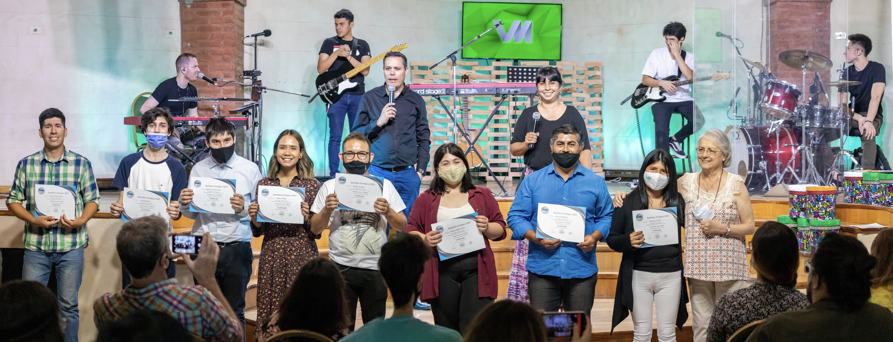

Nuestra institución:
VidaMusik comenzó como un sueño que lentamente se fue convirtiendo en realidad. En Agosto del año 2011 inició esta historia, en Dallas, TX. Gabriel Gallego (fundador), recibió de Dios el sentir de enseñar y levantar nuevas generaciones con el deseo de agradar a Dios a través de la música. El, junto a otros colegas músicos decidieron tomar este sentir y trabajar para volverlo un tesoro palpable. Luego de 1 año de trabajo y planeación, Gabriel decidió volver a la Argentina y transitar este camino. Asi fundó lo que hoy es VidaMusik, una institución cuyo fundamento es Dios y su mayor objetivo: "formar músicos adoradores con el carácter de Cristo". Actualmente, la institución se encuentra bajo la dirección de Leonardo Argüelles y la coordinación de Johan García y Valeria Rimoldi.
